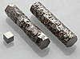

zirconium

Definition: Zirconium is a chemical element with the symbol Zr and atomic number 40. The name zirconium is derived from the name of the mineral zircon, the most important source of zirconium. The word is related to Persian zargun (zircon; zar-gun, "gold-like" or "as gold"). It is a lustrous, grey-white, strong transition metal that closely resembles hafnium and, to a lesser extent, titanium. Zirconium is mainly used as a refractory and opacifier, although small amounts are used as an alloying agent for its strong resistance to corrosion. Zirconium forms a variety of inorganic and organometallic compounds such as zirconium dioxide and zirconocene dichloride, respectively. Five isotopes occur naturally, four of which are stable. Zirconium compounds have no known biological role.
Source: Wikipedia
Wikipedia Page
Wikidata Page